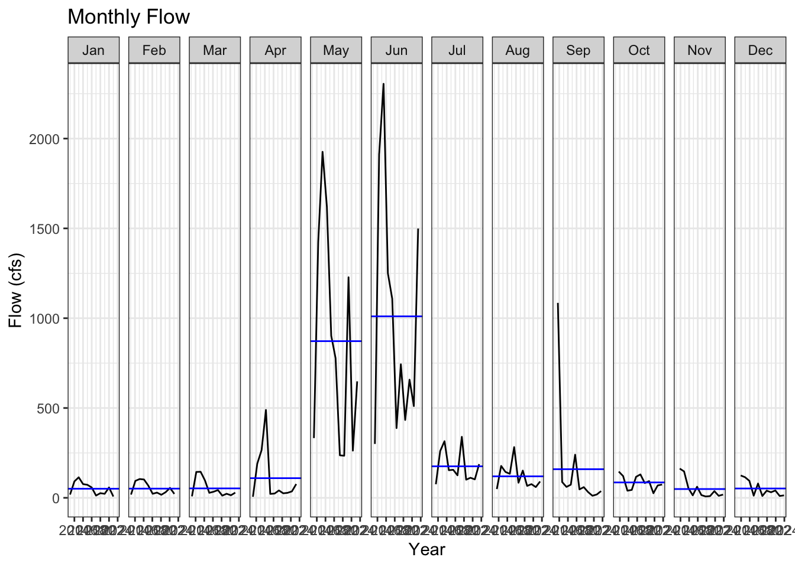
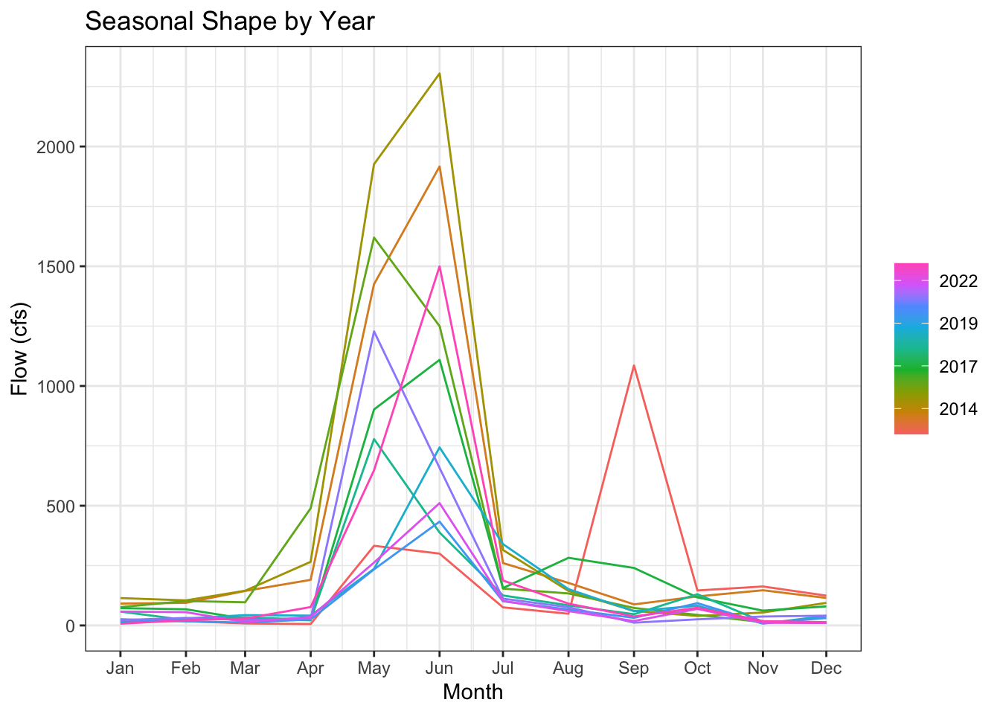
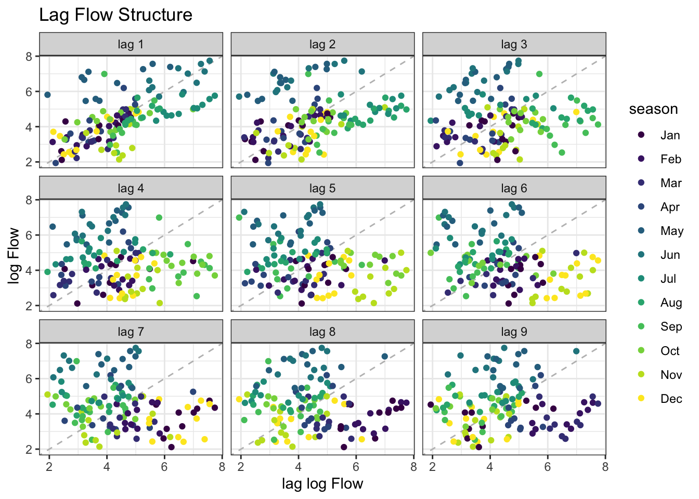
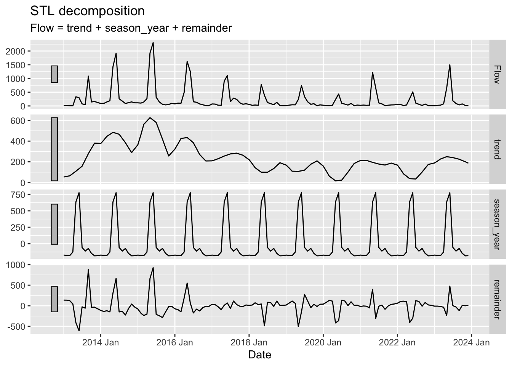
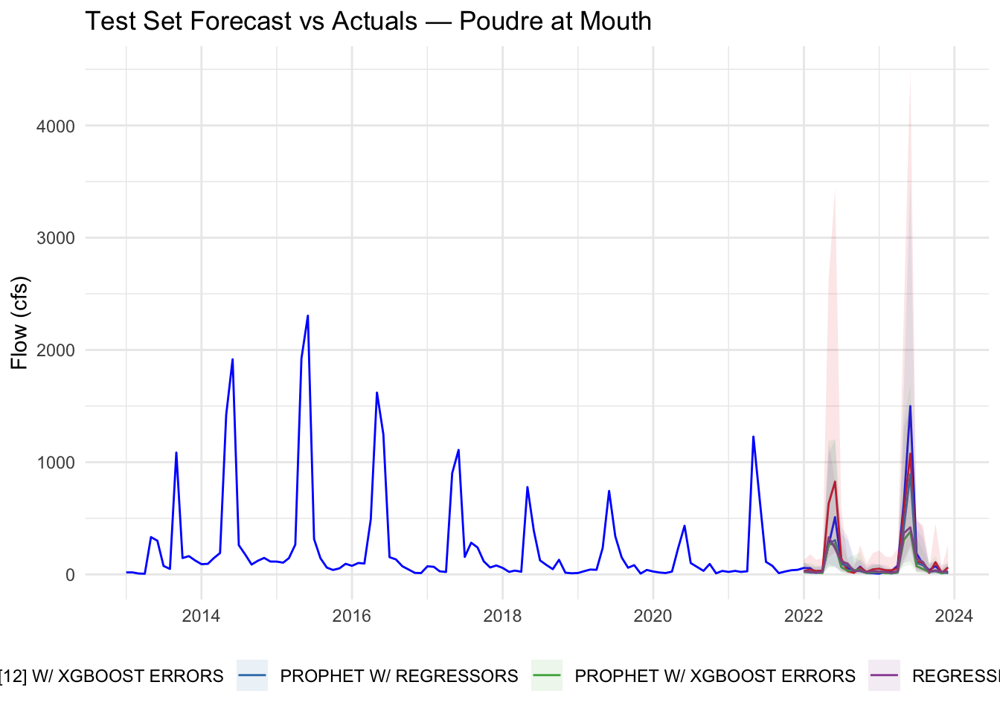
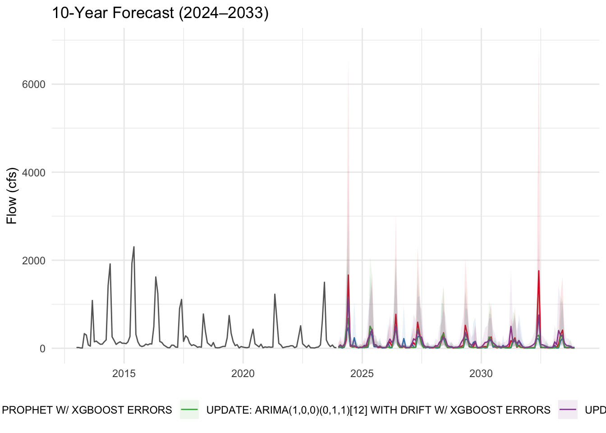

Lab 6: Timeseries Data
Using Modeltime to predict future streamflow on the Cache la Poudre River
Introduction
In workflow I will download streamflow data from the Cache la Poudre River (USGS site 06752260) and analyze it using time series methods and forecasting. I use the modeltime package to predict future streamflow using both the time structure of the series and exogenous climate predictors.
The Poudre is an operational water-supply system: Fort Collins, Loveland, and Greeley all depend on it, and flows forecasting here can directly inform how water managers plan deliveries.
library(tidyverse)
library(plotly)
# remotes::install_github("mikejohnson51/climateR", force = TRUE)
library(dataRetrieval)
library(climateR)
library(terra)
library(exactextractr)
library(tidymodels)
library(tsibble)
library(feasts)
library(modeltime)
library(timetk)
library(tseries) # for stationarity testsGetting the Data
Streamflow
Download daily streamflow for the Poudre at Mouth (USGS 06752260) and aggregate to monthly means.
poudre_flow <- readNWISdv(
siteNumber = "06752260",
parameterCd = "00060",
startDate = "2013-01-01",
endDate = "2023-12-31"
) |>
renameNWISColumns() |>
mutate(Date = yearmonth(Date)) |>
group_by(Date) |>
summarise(Flow = mean(Flow))Historic Climate (GridMET)
We will use climateR::getTerraClim() to download monthly climate data for the Poudre basin (max temperature, precipitation, solar radiation). The exactextractr package spatially averages each raster layer over the basin polygon.
basin <- findNLDI(nwis = "06752260", find = "basin")
sdate <- as.Date("2013-01-01")
edate <- as.Date("2023-12-31")
gm <- getTerraClim(
AOI = basin$basin,
var = c("tmax", "ppt", "srad"),
startDate = sdate,
endDate = edate
) |>
unlist() |>
rast() |>
exact_extract(basin$basin, "mean", progress = FALSE)
historic <- mutate(gm, id = "gridmet") |>
pivot_longer(cols = -id) |>
mutate(name = sub("^mean\\.", "", name)) |>
tidyr::extract(name, into = c("var", "index"), "(.*)_([^_]+$)") |>
mutate(index = as.integer(index)) |>
mutate(Date = yearmonth(seq.Date(sdate, edate, by = "month")[as.numeric(index)])) |>
pivot_wider(id_cols = Date, names_from = var, values_from = value) |>
right_join(poudre_flow, by = "Date")
# Validate: should have 132 rows (11 years × 12 months). If fewer, climate data
# is missing for some months and those flow months were silently dropped.
stopifnot("Climate join dropped flow months — check GridMET download" = nrow(historic) == 132)Future Climate (MACA)
Any time exogenous predictors are used for forecasting, future values of those predictors must also be available. We use MACA — a statistically downscaled climate dataset developed by the same group as GridMET — to get projected temperature, precipitation, and solar radiation through 2033.
sdate <- as.Date("2024-01-01")
edate <- as.Date("2033-12-31")
maca <- getMACA(
AOI = basin$basin,
var = c("tasmax", "pr", "rsds"),
timeRes = "month",
startDate = sdate,
endDate = edate
) |>
unlist() |>
rast() |>
exact_extract(basin$basin, "mean", progress = FALSE)Multiple ensembles available per model. Since `ensemble = NULL`, we default to:
> CCSM4 [rcp45] [r6i1p1]
> CCSM4 [rcp45] [r6i1p1]
> CCSM4 [rcp45] [r6i1p1]Warning in .local(x, y, ...): Polygons transformed to raster CRS. To avoid
on-the-fly coordinate transformation, ensure that st_crs() returns the same
result for both raster and polygon inputs.future <- mutate(maca, id = "maca") |>
pivot_longer(cols = -id) |>
mutate(name = sub("^mean\\.", "", name)) |>
tidyr::extract(name, into = c("var", "index"), "(.*)_([^_]+$)") |>
mutate(index = as.integer(index)) |>
mutate(Date = yearmonth(seq.Date(sdate, edate, by = "month")[as.numeric(index)])) |>
pivot_wider(id_cols = Date, names_from = var, values_from = value)
# Rename the 3 climate columns to match GridMET names (Date column stays first)
stopifnot("Unexpected MACA column count" = ncol(future) == 4)
names(future)[2:4] <- c("ppt", "srad", "tmax") # order matches getMACA var request
future <- mutate(future, tmax = tmax - 273.15) # Kelvin → °CModeling Poudre River Flow
1. Convert to tsibble
poudre <- as_tsibble(historic)Using `Date` as index variable.2. Plot the Time Series
flow_plot <- ggplot(poudre, aes(x = as.Date(Date), y = Flow)) +
geom_line(color = "blue") +
labs(title = "Monthly Streamflow: Cache la Poudre",
y = "Flow (cfs)",
x = "Date") +
theme_bw()
ggplotly(flow_plot)3. Seasonal Diagnostics
Inspect the seasonal structure using two complementary feasts plots.
Subseries plot
gg_subseries(poudre, y = Flow) +
labs(title = "Monthly Flow",
y = "Flow (cfs)",
x = "Year") +
theme_bw()Warning: `gg_subseries()` was deprecated in feasts 0.4.2.
ℹ Please use `ggtime::gg_subseries()` instead.
ℹ Graphics functions have been moved to the {ggtime} package. Please use
`library(ggtime)` instead.
Seasonal plot
gg_season(poudre, y = Flow) +
labs(title = "Seasonal Shape by Year",
y = "Flow (cfs)", x = "Month") +
theme_bw()Warning: `gg_season()` was deprecated in feasts 0.4.2.
ℹ Please use `ggtime::gg_season()` instead.
ℹ Graphics functions have been moved to the {ggtime} package. Please use
`library(ggtime)` instead.
Season is defined as a calendar year. The seasonal pattern it relatively stable, we see in outlier event in Feb. which is likely a signal from the 2013 floods in the region. Peak flow can alternate between May and June which is the snowmelt signal.
4. Stationarity and Autocorrelation
Two diagnostics that directly inform ARIMA model selection:
Lag plot
poudre %>%
mutate(log_flow = log1p(Flow)) %>%
gg_lag(y = log_flow, geom = "point") +
labs(title = "Lag Flow Structure",
x = "lag log Flow", y = "log Flow") +
theme_bw()Warning: `gg_lag()` was deprecated in feasts 0.4.2.
ℹ Please use `ggtime::gg_lag()` instead.
ℹ Graphics functions have been moved to the {ggtime} package. Please use
`library(ggtime)` instead.
Stationarity tests
log_flow <- log1p(poudre$Flow)
# H0 = non-stationary
adf.test(log_flow)Warning in adf.test(log_flow): p-value smaller than printed p-value
Augmented Dickey-Fuller Test
data: log_flow
Dickey-Fuller = -7.3292, Lag order = 5, p-value = 0.01
alternative hypothesis: stationary# H0 = stationary
kpss.test(log_flow)
KPSS Test for Level Stationarity
data: log_flow
KPSS Level = 0.50753, Truncation lag parameter = 4, p-value = 0.03997The tests conflict eachother, but together they tell me that the streamflow has a consistent process and is deterministic, but there is some year over year trend that is changing streamflow and making it non-stationary. Essentially, the flow regime is stationary, but there is a deterministic trend changing means year-to-year. This tracks with the Poudre River, where increased diversion and increased drought are having an impact.
5. Decomposition
decomp <- poudre %>%
model(STL(Flow ~ trend(window = 12) + season(window = "periodic"))) %>% #a 12 month window matches the actualy snowmelt driven flow regime on the Poudre
components()
autoplot(decomp)Warning: `autoplot.dcmp_ts()` was deprecated in fabletools 0.6.0.
ℹ Please use `ggtime::autoplot.dcmp_ts()` instead.
ℹ Graphics functions have been moved to the {ggtime} package. Please use
`library(ggtime)` instead.
Within our time frame, we see some evidence of a long term trend of declining stream flow, although the trend is not clean and there is still year to year variation. The seasonal pattern looks very strong and and consistent, indicating that even as the baseline is shifting the hydrologic regime is consistent. There are higher residuals in the earlier 2013-2017. This period included the 2013 front range flood and some strong El Nino ENSO patterns that likely increase residuals over the long term trend. We all see a strong trend signal for the post 2018 droughts, and recoveries as the droughts moderately bounce back.
Modeltime Prediction
Data Preparation
poudre_tibble <- poudre %>%
as_tibble() %>%
mutate(date = as.Date(Date),
log_flow = log1p(Flow)) %>% #Log transform highly skewed discharge data
select(-Date)
future_tibble <- future %>%
as_tibble() %>%
mutate(date = as.Date(Date)) %>%
select(-Date)Train / Test Split
set.seed(123)
splits <- time_series_split(poudre_tibble, assess = "24 months", cumulative = TRUE)Using date_var: datetraining <- training(splits)
testing <- testing(splits)Model Definitions: Comparing models
models_list <- list(
arima_reg() %>% set_engine("auto_arima"),
arima_boost() %>% set_engine("auto_arima_xgboost"),
prophet_reg() %>% set_engine("prophet"),
prophet_boost() %>% set_engine("prophet_xgboost")
)Model Fitting
models <- map(models_list, ~ fit(.x, log_flow ~ ., data = select(training, -Flow))) #remove flow so only log flow is being usedfrequency = 12 observations per 1 year
frequency = 12 observations per 1 yearDisabling weekly seasonality. Run prophet with weekly.seasonality=TRUE to override this.Disabling daily seasonality. Run prophet with daily.seasonality=TRUE to override this.Disabling weekly seasonality. Run prophet with weekly.seasonality=TRUE to override this.Disabling daily seasonality. Run prophet with daily.seasonality=TRUE to override this.models_table <- as_modeltime_table(models)Calibration and Accuracy
calibration_table <- modeltime_calibrate(models_table, select(testing, -Flow), quiet = FALSE)
modeltime_accuracy(calibration_table) %>%
arrange(mae) %>%
select(.model_desc, mae, mape, mase, rmse, rsq)# A tibble: 4 × 6
.model_desc mae mape mase rmse rsq
<chr> <dbl> <dbl> <dbl> <dbl> <dbl>
1 REGRESSION WITH ARIMA(2,1,1)(2,0,0)[12] ERRORS 0.554 15.2 0.562 0.640 0.790
2 ARIMA(1,0,1)(0,1,1)[12] W/ XGBOOST ERRORS 0.562 17.7 0.569 0.720 0.730
3 PROPHET W/ REGRESSORS 0.580 16.0 0.588 0.692 0.783
4 PROPHET W/ XGBOOST ERRORS 0.683 18.0 0.692 0.753 0.790Regression with ARIMA has the highest Rsq and lowest RMSE as well as the best MASE. This is slightly counterintuitive, as I would expect a non-liner climate signal, which we saw the hints of in the decomposition. However, I think that are time range is too small to properly capture the long term climate signal, and our given time frame has high variability. With the given data, ARIMA is sufficient, but I would expect that to change if I increased my date range and added more regressors.
Test Set Forecast
test_forecast <- calibration_table %>%
modeltime_forecast(new_data = select(testing, -Flow), actual_data = poudre_tibble) %>%
mutate(.value = expm1(.value),
.conf_lo = expm1(pmax(.conf_lo, 0)), #Back transformations, make sure ribbons don't go negative
.conf_hi = expm1(.conf_hi))
test_forecast %>%
filter(.key == "actual") %>%
ggplot(aes(x = .index, y = .value)) +
geom_line(color = "blue") +
geom_line(data = filter(test_forecast, .key == "prediction"),
aes(color = .model_desc)) +
geom_ribbon(data = filter(test_forecast, .key == "prediction"),
aes(ymin = .conf_lo, ymax = .conf_hi, fill = .model_desc),
alpha = 0.1) +
scale_color_brewer(palette = "Set1") +
scale_fill_brewer(palette = "Set1") +
labs(title = "Test Set Forecast vs Actuals — Poudre at Mouth",
x = NULL, y = "Flow (cfs)", color = "Model", fill = "Model") +
theme_minimal() +
theme(legend.position = "bottom")
The confidence intervals are capturing the observed values, but the upper end of the intervals is quite large and is nearly double the observed peak in the period. Additionally, all prediction means are underestimating 2023 flow. There is a discontinuity between the observed values and the start of the forecast, with all forecast beginning by underestimating the flow.
Refit to Full Dataset
refit_tbl <- modeltime_refit(calibration_table, data = select(poudre_tibble, -Flow))frequency = 12 observations per 1 year
frequency = 12 observations per 1 yearDisabling weekly seasonality. Run prophet with weekly.seasonality=TRUE to override this.Disabling daily seasonality. Run prophet with daily.seasonality=TRUE to override this.Disabling weekly seasonality. Run prophet with weekly.seasonality=TRUE to override this.Disabling daily seasonality. Run prophet with daily.seasonality=TRUE to override this.modeltime_accuracy(refit_tbl) %>%
arrange(mae) %>%
select(.model_desc, mae, mape, mase, rmse, rsq)# A tibble: 4 × 6
.model_desc mae mape mase rmse rsq
<chr> <dbl> <dbl> <dbl> <dbl> <dbl>
1 UPDATE: REGRESSION WITH ARIMA(3,1,0)(2,0,0)[12]… 0.554 15.2 0.562 0.640 0.790
2 UPDATE: ARIMA(1,0,0)(0,1,1)[12] WITH DRIFT W/ X… 0.562 17.7 0.569 0.720 0.730
3 PROPHET W/ REGRESSORS 0.580 16.0 0.588 0.692 0.783
4 PROPHET W/ XGBOOST ERRORS 0.683 18.0 0.692 0.753 0.790My model metrics do not change after refitting all data. This is likely because the models have captured the variability linked to temporal cycles and the remaining noise is unexplained variance regardless of the addition of more time series data. It also indicates that my model is not over fitting and is likely stable for forecasting.
Forecast into the Future (2024–2033)
future_forecast <- refit_tbl %>%
modeltime_forecast(new_data = future_tibble %>% drop_na(date), actual_data = poudre_tibble) %>%
mutate(.value = expm1(.value),
.conf_lo = expm1(pmax(.conf_lo, 0)),
.conf_hi = expm1(.conf_hi))
future_forecast %>%
filter(.key == "actual") %>%
ggplot(aes(x = .index, y = .value)) +
geom_line(color = "grey40") +
geom_line(data = filter(future_forecast, .key == "prediction"),
aes(color = .model_desc)) +
geom_ribbon(data = filter(future_forecast, .key == "prediction"),
aes(ymin = .conf_lo, ymax = .conf_hi, fill = .model_desc),
alpha = 0.1) +
scale_color_brewer(palette = "Set1") +
scale_fill_brewer(palette = "Set1") +
labs(title = "10-Year Forecast (2024–2033)",
x = NULL, y = "Flow (cfs)", color = "Model", fill = "Model") +
theme_minimal() +
theme(legend.position = "bottom")
Conclusion
- Model agreement:
The models have decent agreement, but there are a couple years where the prophet is producing a much higher peak flow than ARIMA. Generally, I would say that this is because the prophet has more flexibility for dealing with non linear climate trends so it may handle returns to wetter conditions with higher peak flows. Given I included climate regressors, my model convergence also suggest there is genuine uncertainty in how flow responds to the basic climate factors provided, especially for catching the peak flow snow melt pulse.
- Forecast quality:
I would suggest the ARIMA Regression for CWCB for water-supply planning if we continued with the same simple future climate predictions. This is two fold. First, it has the best rsq and RMSE, which suggests it inherently may be capturing the variability best. Second, the model forecast is conservative, and it’s always better in water resource planning to assume lower supply side volume and be pleasantly surprised. The ARIMA forcast also tracks with our current understanding of how climate change will likely reduce flows.
- Regressor value:
I used The MACA climate projections which create uncertainty in my climate regressors that are contributing to predictions. Ideally, I would run multiple forecasts with different emission scenarios, allowing for a better understanding of possible future conditions depending on climate trajectory.
- Improvement path:
For the Poudre, including variables to capture snow pack and social factors would both be helpful. I would be interested in training the model on monthly basin average SWE estimates and then use a forcasted SWE output for the flow forecast. Social demand is more challenging to capture since population increase in the region has been shown to also include a per capita water usage decrease. I would start with incorporating census population data and growth predictions and go for there.